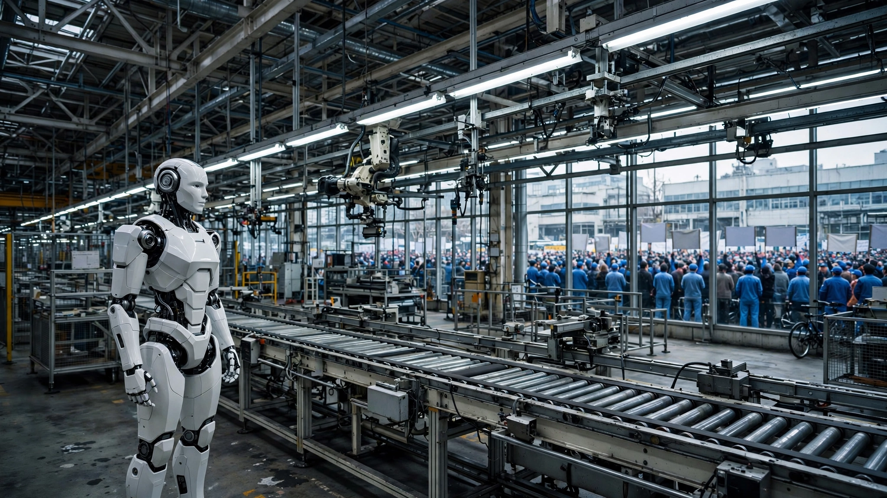

A $130,000 Robot Replaces Three Workers and Pays for Itself in Nine Months. The Workers Just Shut Down a Factory.
On Monday, 40,000 Hyundai auto workers in Ulsan began the car industry’s first partial strike over humanoid robots. They are not protesting a vague future. The company has committed to deploying 25,000 Atlas robots across its factories by 2028, and the union’s own arithmetic shows each unit does the work of three people at the loaded cost of one, and they are not protesting a vague future.

Seventy-three days. That is how many partial-strike days it would take Hyundai’s workers to cost the company as much as 25,000 Atlas humanoid robots. The three-day walkout that began Monday in Ulsan, with four hours off the line each day, roughly 5,000 vehicles lost per shift, and approximately $134 million in disrupted revenue, amounts to 4.1 percent of the fleet’s capital cost. The robots do not strike, and that is precisely the point.
This is the auto industry’s first factory stoppage explicitly triggered by humanoid robots, and it arrived at the one company on Earth that owns both the robots and the factories where they will work. Hyundai purchased the remaining stake in Boston Dynamics from SoftBank in June, taking full ownership of the company that builds Atlas. In May, at a JPMorgan Chase investor session in Boston, Hyundai disclosed that 25,000 of the 30,000 Atlas units it plans to produce annually by 2028 will go to its own plants. That commitment absorbs 83 percent of production before a single robot reaches an outside customer.
The Break-Even Arithmetic
A South Korean government research institute estimates Atlas at $130,000 per unit. Hyundai’s union puts the figure closer to 200 million won, roughly $145,000. Annual maintenance runs about 14 million won, or $9,500, and the math crushes regardless of which unit-cost figure you pick.
Hyundai’s Korean production workers earn an average total compensation near 90 million won per year, roughly $65,000 including bonuses and benefits. By the union’s calculation, a single Atlas, operating around the clock, replaces the labor output of three workers. Here is the payback calculation nobody seems to have published:
| Scenario | Robot cost (Year 1) | Annual labor replaced | Payback |
|---|---|---|---|
| Union estimate (3 workers) | $139,500 | $195,000 | 9.1 months |
| Conservative (2 workers) | $139,500 | $130,000 | 13.9 months |
| Pessimistic (1.5 workers) | $139,500 | $97,500 | 19.1 months |
Even at the pessimistic end—an Atlas handling the workload of just one and a half humans—the robot pays for itself in under 20 months. At the union’s own estimate of three-worker replacement, payback arrives before nine months are over. After that, every hour of robot operation is pure margin. At fleet scale, the numbers are enormous: 25,000 robots at $130,000 each is $3.25 billion in upfront capital. Annual maintenance adds $237.5 million, but if each unit replaces even two workers’ output, the fleet generates over $3.25 billion in annual labor-equivalent savings, meaning the entire investment recoups within 14 months.
South Korea Is Already the Most Automated Country on Earth
The International Federation of Robotics reported in its World Robotics 2025 edition that South Korea leads every nation in robot density: 1,220 industrial robots per 10,000 manufacturing employees, nearly ten times the global average of 132, with Singapore second at 818, Germany third at 449, Japan at 446, and the United States at 307. Nobody else comes close. Worldwide, the operational stock stands at 4.66 million units.
Korea already has roughly 392,000 industrial robots in active service. Adding 25,000 humanoids would push that number toward 417,000, lifting the density metric to approximately 1,280 per 10,000 workers—a 5 percent increase in a country that was already eight times more automated than the global average, and what a density figure for fixed industrial arms fails to capture is that these new machines walk, think, and swap their own batteries. Korea’s existing 392,000 robots are welding arms, paint sprayers, and pick-and-place machines bolted to the floor, each one engineered to execute a single task in a fixed position for a decade. Atlas has 56 degrees of freedom, 360-degree joint rotation, a 50-kilogram lift capacity, and autonomous three-minute battery swaps, specifications that make it categorically different from any FANUC arc welder or ABB handler currently counted in the IFR statistics. A fixed robot replaces a task, but a humanoid, if it works, can replace a role.
What the Union Actually Wants
Byun Jun-hwan, the union’s secretary-general, told the Wall Street Journal the demands are preemptive: “We have to prepare to ensure there are safeguards in place.” The specific asks are structural, not reactionary. Workers want a shift from hourly wages to a fixed monthly salary, insulating pay from the hour reductions that automation will bring. They want the retirement age extended from 60 to 65, buying five more years of employment before the robots finish scaling. They want formal labor-management agreements before any Atlas enters a factory floor. And they want larger bonuses tied to the AI-driven revenue boom that has enriched Hyundai’s shareholders but not yet its production workers.
The union has struck in 26 of the past 38 years, but this one is different because the object of protest is not wages alone but a technology whose economics guarantee displacement unless the contract explicitly forbids it, which means calling this Luddism misreads the situation entirely. Hyundai’s workers have run the same break-even calculation shown above and arrived at the same conclusion: the math is too good for management not to deploy. Their only leverage is the labor agreement, and the only time to negotiate it is before the robots arrive at the Savannah, Georgia, metaplant in 2028.
The Global Humanoid Factory Race
Hyundai is not acting alone. Tesla is retooling an entire factory for Optimus production, with manufacturing expected to begin before year’s end. BMW started testing the Aeon humanoid in Germany last month. Mitsubishi announced plans to mass-produce humanoid robots for engine assembly by early 2027. China’s Xiaomi has already placed humanoid units on its EV assembly lines, and XPeng is building toward monthly production of 1,000 IRON humanoid robots by December. Morgan Stanley projects 50,000 humanoid units shipping into Chinese factories in 2026 alone, doubling to 100,000 in 2027.
General Motors added 50 collaborative robots to its Factory Zero plant in Detroit and then laid off roughly 1,000 workers in the same quarter. UAW President Shawn Fain noticed, calling humanoid robots, AI, and mass automation “one of the most profound technological revolutions in our lifetimes” at a union convention last month. In France, Renault has agreed with its labor force to mandate reskilling of workers affected by automation, establishing the only contractual precedent of its kind in the European auto sector. No equivalent exists in the United States, where OSHA currently has no regulations specific to humanoid robots operating alongside human workers.
The $44.7 Million Question
Every partial-strike day costs Hyundai an estimated $44.7 million in disrupted revenue. Every Atlas robot, once deployed, generates an estimated $120,500 in annual net savings after maintenance (at the conservative two-worker scenario). Put differently: 371 robots, running for one year, offset the cost of one day of partial strike. Hyundai’s management is not negotiating from a position of weakness. It is negotiating from a position of accelerating leverage, and both sides know the acceleration only goes in one direction.
Carl Benedikt Frey, the Oxford researcher who wrote The Technology Trap, told the Journal: “Hyundai is where that question will be tested first.” He means whether labor can slow the adoption of a technology whose cost curve has already crossed the displacement threshold. That answer will ripple through every automaker with a humanoid program, every union with a manufacturing contract, and every regulator wondering whether ISO 25785-1—the safety standard for walking robots, still under development, led in part by engineers from Boston Dynamics and Agility Robotics—will arrive before or after the first 25,000 units reach the factory floor.
Strongest Counterargument
The break-even math assumes that Atlas will actually perform at the level Boston Dynamics claims. Susanne Bieller, general secretary of the International Federation of Robotics, cautioned the Journal that humanoid demos are often “prototypes trained for a highly tailored demo,” and she expects Hyundai’s deployment to be the first real test of whether humanoids can work as intended in production factories. Atlas’s 56-degree-of-freedom body, the reinforcement-learned lifting, and the self-swapping batteries are lab-proven. Running 25,000 of them across multiple factory lines at automotive uptime standards is something that has never been done by anyone, anywhere. Hyundai is also starting in Georgia, a non-union state, precisely to avoid this conflict during the initial shakedown. If early deployment stumbles, whether through excessive downtime, quality defects, or maintenance costs above the projected $9,500, the economic case narrows. Byun’s union is betting, rationally, that the shakedown period is the window for structural protections, not the smooth-operation period that follows.
Limitations
The $65,000 average worker compensation figure is estimated from Levels.fyi and industry reporting; Hyundai does not disclose production-worker pay at the plant level. That “three workers per robot” ratio is the union’s own calculation, which has not been independently verified against Atlas’s actual factory output (no such output exists yet, since no Atlas operates on a production line). Atlas’s $130,000 unit cost is from a Korean government research institute cited by the Wall Street Journal; Boston Dynamics has not publicly confirmed Atlas pricing. It may cost more. Maintenance cost estimates come from the union and have not been cross-referenced with Hyundai Mobis’s actuator and components cost structure. Strike revenue impact is calculated from industry estimates, not Hyundai’s own disclosure.
The Bottom Line
Hyundai’s workers have chosen to fight on the only terrain that matters: the labor contract, before the robots arrive. Its position is grounded not in fear of technology but in an unflinching reading of the numbers, because a $130,000 machine that does the work of three people and maintains itself for $9,500 a year does not coexist with an hourly workforce but displaces it entirely. What Ulsan is answering this week is not whether humanoid robots will transform manufacturing, since the economics have already decided that, but whether the workers who built the cars will have any say in how the transition happens or whether they will learn about it the way a thousand GM employees in Detroit did: on the same day as the robots.
If you work in manufacturing anywhere on Earth, watch Ulsan. If you run a factory, run the break-even calculation for your own wage structure. If you write labor policy, start drafting now. Seventy-three partial-strike days fund a 25,000-robot fleet. Leverage is already shifting, and the contract is the last gate. If you are a union negotiator: do the math, demand structural protections, and do it while your members still have something to walk out from. That window is open and closing.